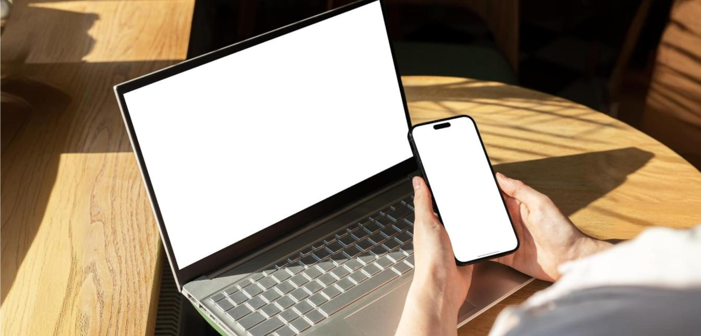
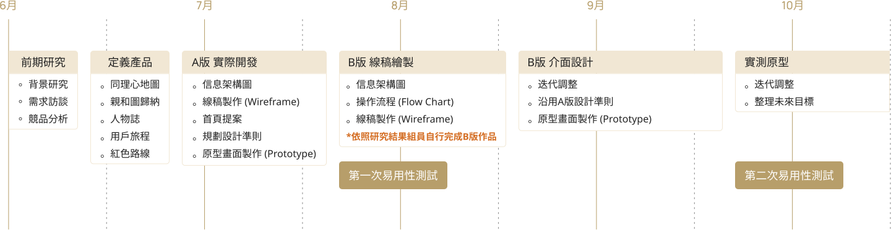

我的角色：
UIUX設計師/前端協作溝通
應用裝置：
Web / Pad / Mobile
製作時間：
5 months
完成日期：
2023.10.04
專案介紹
一趟完美的旅遊背後是需要耗費很多研究時間，該如何幫助用戶在繁雜的資訊中，仍可以輕鬆選購行程團是本次改版的目標。
因專案時程有限，額外與組員利用下班時間進行詳細的UX研究，找出解決痛點的解方，增加用戶黏著度。
負責項目
介面設計、流程優化、研究訪談、易用性測試
團隊成員
1位專案 / 2位UIUX設計師 / 1位前端工程師 / 1位後端工程師
01.我的貢獻
專案中我主要的任務是輔助研究調查及分擔部分內頁設計，經過研究提出喜好度填寫機制，提升首頁推出的內容可以更精準地抓到用戶的需求，接著結合比較清單功能輕鬆分析行程優缺點，增加閱讀便利性，並優化後台的維護模式，減少人員的上稿時間。
02.面臨的挑戰
旅遊介紹資訊往往冗長且繁多，需在不減少內容的條件下完成簡潔的版面配置，其中結合動態功能，旨在兼顧美感和實用性，找到兩者之間的平衡是非常重要的關鍵要素。 由於客戶資金有限，無法採納所有設計方案，加上時程緊迫，研究的時間也不充裕，因此需要對部分項目進行取捨，以完成當前階段必須執行的基本項目。
03.結果與影響
上線兩個月網站新增使用者人數從1564人提升至4869人，活躍用戶數量約為3000多人。後台維護人員上架時程減少50%左右的工時，加速工作效率。
設計流程

需求洞察
與客戶需求訪談後得到很多反饋，列出以下最常見的問題，整理內容如下表所示：
訪談洞察一：版面風格凌亂影響閱讀，行程比較不方便，需來回切換頁面，或是自行整理優缺點。
心情影響線：版面過於老舊，資訊呈現不清楚，不易快速查看到行程重點，導致研究過程耗時。
 頁面好亂，我找不到資訊在哪...
頁面好亂，我找不到資訊在哪...
 比較行程時都要反覆切換頁面，資訊內容也需自己整理分析，看的好煩躁！
比較行程時都要反覆切換頁面，資訊內容也需自己整理分析，看的好煩躁！
訪談洞察二：無進階篩選功能，搜尋行程不易。
心情影響線：搜尋結果無法精確篩選出合適的行程，資料過於繁雜，使得用戶在挑選時感到困惑。
 搜尋結果不能篩選或是排序想要的條件嗎？
搜尋結果不能篩選或是排序想要的條件嗎？
 搜尋頁的行程太多，不知道從何挑選。
搜尋頁的行程太多，不知道從何挑選。
訪談洞察三：後台維護方式過於呆板，耗時又繁瑣。
心情影響線：行程資訊相同，卻要重複上稿，修改項目時也要逐一單項調整，維護耗時且不友善。
 行程資訊重複卻不能共同維護，逐一修改很麻煩。
行程資訊重複卻不能共同維護，逐一修改很麻煩。
 每日行程會有部分資訊不同，希望共同維護時仍保留可單項微調的空間。
每日行程會有部分資訊不同，希望共同維護時仍保留可單項微調的空間。
後台操作攸關公司機密無法於線上發布，細節說明待面試階段會使用PPT介紹優化後的流程。
競品分析
針對規模差不多的旅行社進行優缺點分析